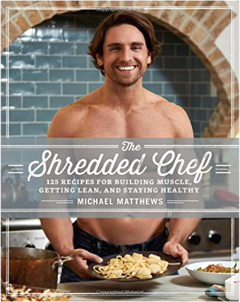
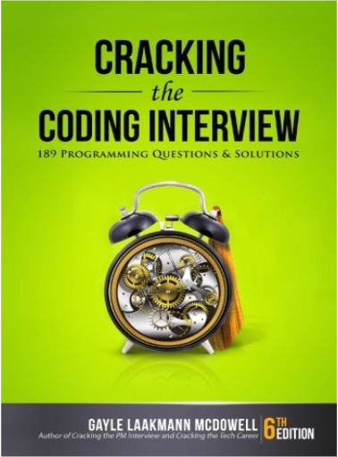
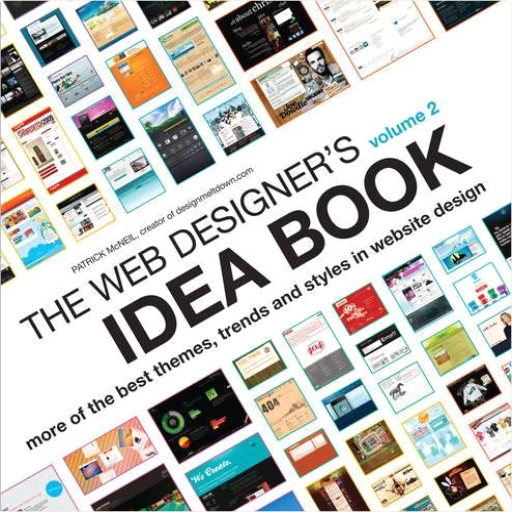
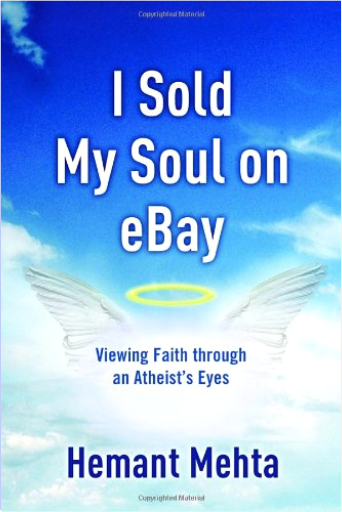
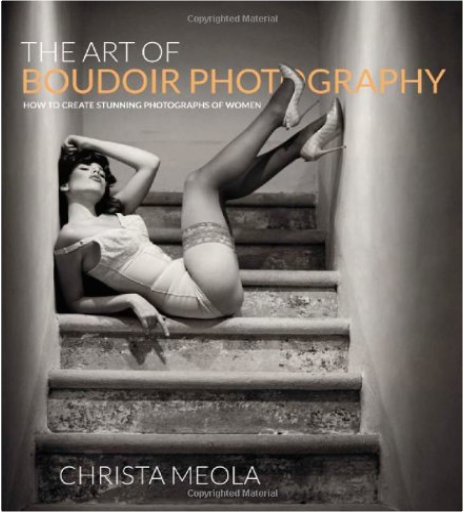
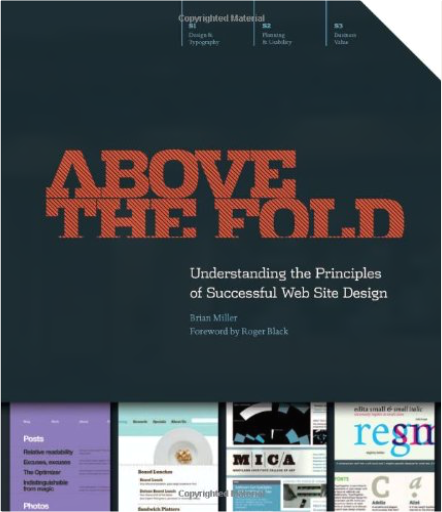
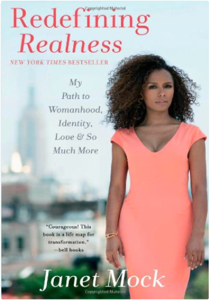
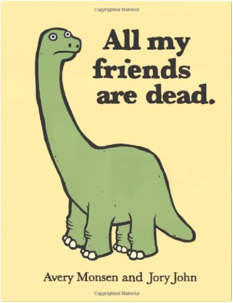

The Shredded Chef: 120 Recipes for Building Muscle, Getting Lean, and Staying HealthyMichael Matthews, Andrea Lynn INTRODUCING THE #1 BESTSELLING HEALTHY COOKBOOK WITH OVER 100,000 COPIES SOLD!
If you want to build a body you can be proud of without starving or depriving yourself of all the foods you actually like...then you want to read this book.
What if I told you that just about everything magazines and trainers "teach" you about dieting is wrong?
What if you could build muscle and lose fat eating "naughty" foods every week?
What if you didn't have to suffer through low-carb dieting to get lean? In fact, what if you could eat all the carbs you wanted?
In short, what if I told you that proper dieting—whether you want to maximize fat loss or muscle growth—is much simpler and more enjoyable than you've been led to believe?
Imagine...eating delicious, filling meals every day...never feeling starved or stuffed...having great energy levels and workouts...and watching your body respond exactly as you desire, dropping fat or adding muscle each and every week.
And imagine finally understanding how proper dieting really works, never again falling for the BS, tricks, and gimmicks pushed by "gurus" and other shysters.
Well, I have good news.
When you know how to diet properly—and this doesn't mean learning to eat boiled chicken and raw broccoli six times per day—getting lean and muscular becomes simple, convenient, and dare I say...enjoyable.
And this book will show you the way.
Here's a "sneak peek" of what you'll find inside:
13 delicious and easy-to-make breakfast recipes, like "BLT" Eggs Benedict, Heuvos Rancheros, High-Protein Banana Oatcakes, Spice Caribbean Oatmeal with Yogurt Swirl, and more.
11 mouthwatering salads and dressings, like Spicy Santa Fe Taco Salad, Grilled Mediterranean Salad with Sun-Dried Tomato Vinaigrette, Creamy Jalapeno-Cilantro Dressing, and more.
14 "diet-friendly" snacks that you'll actually want to eat, like Blueberry-Coconut Pancake Batter Smoothie, Maple-Walnut Protein Muffins, Peanut Butter Protein Swirl Brownies, and more.
16 succulent beef and pork recipes that make great lunches and dinners, like Beef Stroganoff, Beef Lo Mein, Parmesan-Crusted Pork Chops, and more.
18 poultry recipes that you'll love again and again, like Curry Chicken, Mexican Meatloaf, Pollo Fajitas, and more.
8 savory seafood recipes like Creamy Fettuccine with Scallops, Graham Cracker-Crusted Tilapia, Seared Cod with No-Cook Mustard-Caper Sauce, and more.
11 awesome side dishes like Crispy Squash Fries, Sweet Potato Chips, Roasted Garlic Twice-Baked Potato, and more.
10 delectable desserts that can actually fit your macros, like Peach Cobbler, Maple-Raisin Bread Pudding, Triple Berry Crisp, and more.
Simply put, The Shredded Chef isn't just another "healthy cookbook."
It's 270 pages of practical dietary wisdom backed by over 115 scientific studies (all referenced, of course!) and decades of anecdotal evidence.
It's also going to give you simple and helpful cooking insights that will immediately upgrade your culinary skills.
So...imagine, just 12 weeks from now, wooing your friends, family, and significant other with restaurant-quality meals that cost a fraction of the price...
...and being constantly complimented on how you look and asked what the heck you're doing.
Well, scroll up, buy this book now, and start your journey to your best body ever today.
SPECIAL BONUS FOR READERS
With this book you'll also get two free eBooks (one for men and one for women) that teach you the fundamentals of strength training and muscle building and give you tried-and-true weightlifting programs that will change your body in just 8 weeks.
You'll also get 10 meal plans (5 for men and 5 for women) that show you how to put flexible dieting principles into practice and make them work for you.
And last but not least, you'll get a spreadsheet that contains the calorie and macronutrient counts for all the recipes in the book. Cracking the Coding Interview: 189 Programming Questions and SolutionsGayle Laakmann McDowell I am not a recruiter. I am a software engineer. And as such, I know what it's like to be asked to whip up brilliant algorithms on the spot and then write flawless code on a whiteboard. I've been through this as a candidate and as an interviewer.
Cracking the Coding Interview, 6th Edition is here to help you through this process, teaching you what you need to know and enabling you to perform at your very best. I've coached and interviewed hundreds of software engineers. The result is this book.
Learn how to uncover the hints and hidden details in a question, discover how to break down a problem into manageable chunks, develop techniques to unstick yourself when stuck, learn (or re-learn) core computer science concepts, and practice on 189 interview questions and solutions.
These interview questions are real; they are not pulled out of computer science textbooks. They reflect what's truly being asked at the top companies, so that you can be as prepared as possible. WHAT'S INSIDE?189 programming interview questions, ranging from the basics to the trickiest algorithm problems.A walk-through of how to derive each solution, so that you can learn how to get there yourself.Hints on how to solve each of the 189 questions, just like what you would get in a real interview.Five proven strategies to tackle algorithm questions, so that you can solve questions you haven't seen.Extensive coverage of essential topics, such as big O time, data structures, and core algorithms.A behind the scenes look at how top companies like Google and Facebook hire developers.Techniques to prepare for and ace the soft side of the interview: behavioral questions.For interviewers and companies: details on what makes a good interview question and hiring process.Number of Pages:696 The Web Designer's Idea Book, Vol. 2: More of the Best Themes, Trends and Styles in Website DesignPatrick McNeil Web Design Inspiration at a Glance
Volume 2 of The Web Designer's Idea Book includes more than 650 new websites arranged thematically, so you can easily find inspiration for your work. Author Patrick McNeil, creator of the popular web design blog designmeltdown.com and author of the original bestselling Web Designer's Idea Book, has cataloged thousands of sites, and showcases the latest and best examples in this book. The web is the most rapidly changing design medium, and this book offers an organized overview of what's happening right now. Sites are categorized by type, design element, styles and themes, structural styles, and structural elements. This new volume also includes a helpful chapter explaining basic design principles and how they can be applied online. Whether you're brainstorming with a coworker or explaining your ideas to a client, this book provides a powerful communication tool you can use to jump start your next project. Facial Feminization Surgery: A Guide for the Transgendered WomanDouglas K. Ousterhout MD A practical guide to facial-feminization surgery for the male who is transitioning to female, this book focuses on a pioneering form of cosmetic surgery that reshapes the male facial structure. Dramatic before and after photographs and detailed illustrations of each surgery show how reconstructive surgery recontours the brow and nose ridge, reduces the size of the jawbone and chin, and reshapes the trachea to eliminate the Adam’s apple. I Sold My Soul on eBay: Viewing Faith through an Atheist's EyesHemant Mehta Unique insights from an atheist’s Sunday-morning odyssey
When Hemant Mehta was a teenager he stopped believing in God, but he never lost his interest in religion. Mehta is “the eBay atheist,” the nonbeliever who auctioned off the opportunity for the winning bidder to send him to church. The auction winner was Jim Henderson, a former pastor and author of Evangelism Without Additives. Since then, Mehta has visited a variety of church services–posting his insightful critiques on the Internet and spawning a positive, ongoing dialogue between atheists and believers.
I Sold My Soul on eBay tells how and why Mehta became an atheist and features his latest church critiques, including descriptions of his visits to some of the best-known churches in the country. His observations will surprise and challenge you, revealing how the church comes across to those outside the faith. Who better than a nonbeliever to offer an eye-opening assessment of how the gospel is being presented–and the elements that enhance or detract from the presentation.
Mehta announced prior to his churchgoing odyssey that he would watch for any signs of God’s existence. After spending Sunday mornings in some of the nation’s leading churches, what happened to the man who sold his soul on eBay? Did attending church change his lack of belief? The answers can be found inside. The Art of Boudoir Photography: How to Create Stunning Photographs of WomenChrista Meola "Cultivating sex appeal and looking great naked is not about crash dieting or Photoshop, but rather is about a woman’s attitude, confidence, playful personality, and feeling good in her own skin.” –Christa Meola, boudoir photographer
In this greatly anticipated book The Art of Boudoir Photography: How to Create Stunning Photographs of Women, pro photographer Christa Meola goes beyond photography instruction to include detailed information on how to help women look and feel beautiful by cultivating their sex appeal. This beautifully illustrated guide will not only enhance your understanding of how to bring out the best in every woman, but also sharpen your photography skills in order to capture her successfully.
Whether shooting with a pro model, plain-Jane, curvy gal, or soccer mom, Christa gets to know her subject intimately in order to help her look and feel beautiful, sexy, and confident. Christa shares her personal tips and techniques throughout the entire process, creating an amazing experience that produces photographs packed with emotion. She covers every step in creating a successful boudoir shoot, including how to prepare a subject who has never posed before, coaching sensual movement, beautiful lighting setups with minimal equipment, how to flatter every figure, and more. With “Before and After” profiles and “Do and Don’t” scenarios throughout, essential lists, practical tips for male photographers, metadata for every shot, as well as post-processing techniques in Adobe Lightroom and Photoshop, this book offers clear and inspiring instruction.
The Art of Boudoir Photography is about transformation. It’s about cultivating sex appeal and enthusiastic positivity. It’s that jolt of confidence and bolt of sexual prowess to tease out of your subject. It’s for each woman to recognize her individual beauty, provide an opportunity for her to break through her comfort zone, honor her body, and celebrate femininity. For photographers with varying levels of experience, this book is for you–to appreciate and embrace boudoir photography, enhance your understanding of what it is, what it can do for women, and most importantly, how to have fun with it!  Creating Motion Graphics with After Effects: Essential and Advanced Techniques, 5th Edition, Version CS5Chris Meyer, Trish Meyer Creating Motion Graphics with After Effects: Essential and Advanced Techniques, 5th Edition, Version CS5Chris Meyer, Trish Meyer * 5th Edition of best-selling After Effects book by renowned authors Trish and Chris Meyer covers the important updates in After Effects CS4 and CS5
* Covers both essential and advanced techniques, from basic layer manipulation and animation through keying, motion tracking, and color management
* Companion DVD is packed with project files (for CS5), source materials, and nearly 200 pages of bonus chapters
Trish and Chris Meyer share over 17 years of hard-earned, real-world film and video production experience inside this critically acclaimed text. More than a step-by-step review of the features in AE, readers will learn how the program thinks so that they can realize their own visions more quickly and efficiently. This full-color book is packed with tips, gotchas, and sage advice that will help users thrive no matter what projects they might encounter.
Creating Motion Graphics 5th Edition has been thoroughly revised to reflect the new features introduced in both After Effects CS4 and CS5. New chapters cover the revolutionary new Roto Brush feature, as well as mocha and mocha shape. The 3D section has been expanded to include working with 3D effects such as Digieffects FreeForm plus workflows including Adobe Repoussé, Vanishing Point Exchange, and 3D model import using Adobe Photoshop Extended. The print version is also accompanied by a DVD that contains project files (for CS5) and source materials for all the techniques demonstrated in the book, as well as nearly 200 pages of bonus chapters on subjects such as expressions, scripting, and effects.
Subjects include: Animation Techniques; Layer Management; Modes, Masks, and Mattes; Mastering 3D Space; Text Animation; Effects & Presets; Painting and Rotoscoping; Parenting, Nesting, and Collapsing; Color Management and Video Essentials; Motion Tracking and Keying; Working with Audio; Integrating with 3D Applications; Puppet Tools; Expressions; Exporting and Rendering; and much more.
* Customers please note that files on the DVD that accompany the print version of this book are NOT available when you buy the Kindle or other electronic versions of the book. Also, the 5th Edition is for CS5; all project files provided are for CS5 only. Above the Fold: Understanding the Principles of Successful Web Site DesignBrian Miller Above the Fold is a book about the fundamentals of effective graphic communication set in the context of Web design. Unlike other books that focus on the intersection of design and technology, Above the Fold explores the relationship between the stakeholders of a Web project— the designer, the user and the client — and how this continuous cycle affects the decisions made by successful Web designers. Above the Fold is not technical manual or a how-to book, nor is it about timely trends; it's about the timeless fundamentals of layout, usability and measurement that lead to a successful digital product. Redefining Realness: My Path to Womanhood, Identity, Love & So Much MoreJanet Mock In her profound and courageous New York Times bestseller, Janet Mock establishes herself as a resounding and inspirational voice for the transgender community—and anyone fighting to define themselves on their own terms.
With unflinching honesty and moving prose, Janet Mock relays her experiences of growing up young, multiracial, poor, and trans in America, offering readers accessible language while imparting vital insight about the unique challenges and vulnerabilities of a marginalized and misunderstood population. Though undoubtedly an account of one woman’s quest for self at all costs, Redefining Realness is a powerful vision of possibility and self-realization, pushing us all toward greater acceptance of one another—and of ourselves—showing as never before how to be unapologetic and real. All My Friends Are DeadAvery Monsen, Jory John If you're a dinosaur, all of your friends are dead. If you're a pirate, all of your friends have scurvy. If you're a tree, all of your friends are end tables. Each page of this laugh-out-loud illustrated humor book showcases the downside of being everything from a clown to a cassette tape to a zombie. Cute and dark all at once, this hilarious children's book for adults teaches valuable lessons about life while exploring each cartoon character's unique grievance and wide-eyed predicament. From the sock whose only friends have gone missing to the houseplant whose friends are being slowly killed by irresponsible plant owners (like you), All My Friends Are Dead presents a delightful primer for laughing at the inevitable. V for VendettaAlan Moore A new trade paperback edition of the graphic novel that inspired the hit movie!
A powerful story about loss of freedom and individuality, V FOR VENDETTA takes place in a totalitarian England following a devastating war that changed the face of the planet.
In a world without political freedom, personal freedom and precious little faith in anything comes a mysterious man in a white porcelain mask who fights political oppressors through terrorism and seemingly absurd acts. It's a gripping tale of the blurred lines between ideological good and evil.
This new trade paperbackedition features the improved production values and coloring from the 2005 hardcover. The Unitarian Universalist Pocket Guide, 5th EditionRev. Peter Morales The Unitarian Universalist Pocket Guide is one of the most complete introductions to Unitarian Universalism available, covering ministry, worship, religious education, social justice, and history. The 2012 edition is the most complete revision in over a decade. Contributors include Kay Montgomery, John Crestwell, Gail Geisenhainer, Rosemary Bray McNatt, Jane Ranney Rzepka, Mark Belletini, Judith Frediani, Rebecca Parker, and Dan McKanan. |

 Made with Delicious Library
Made with Delicious Library